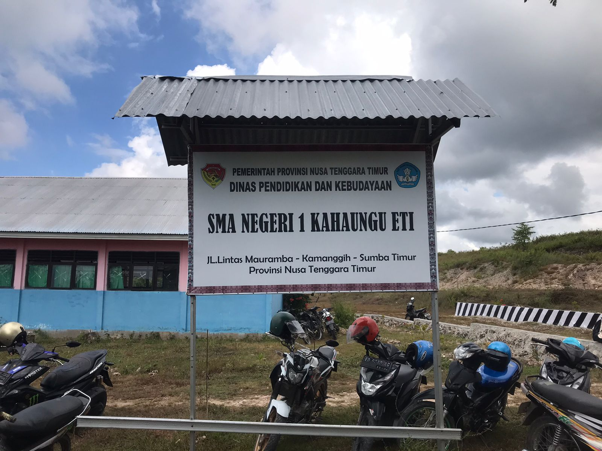
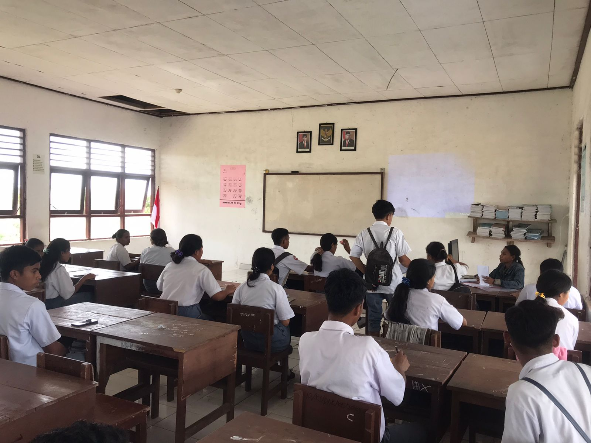
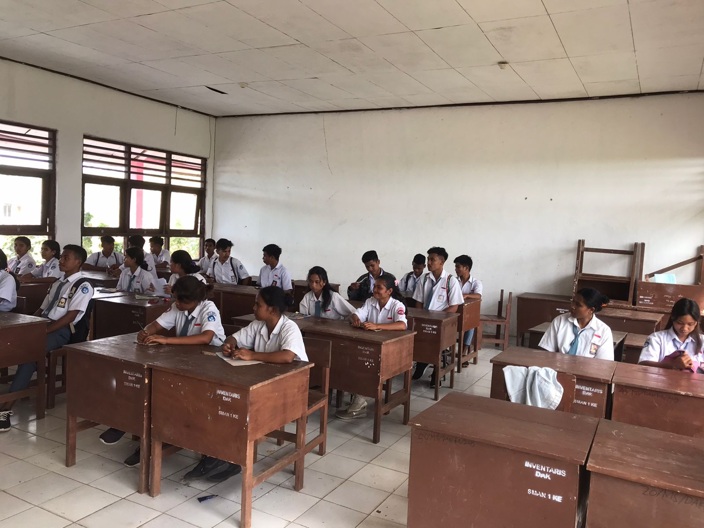
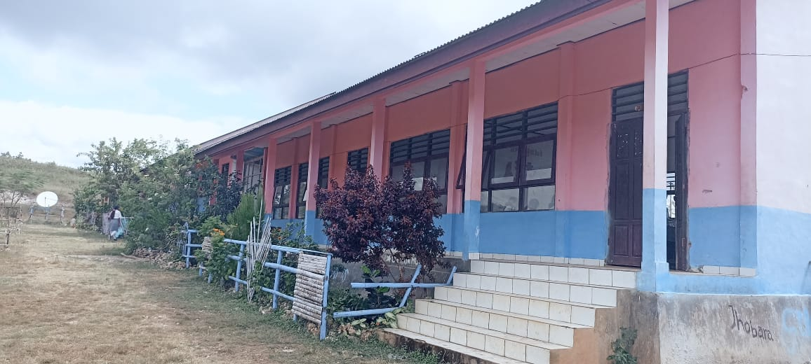
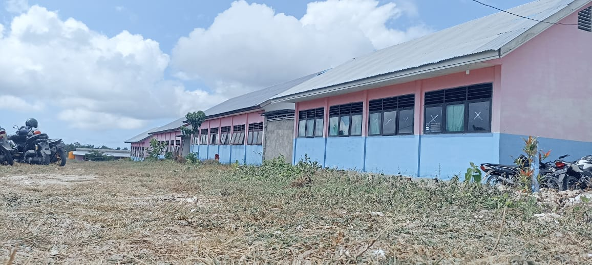

<!-- Halaman utama -->
<!DOCTYPE html>
<!-- <html>
  <head>
    <title>SMANKA - Struktur Organisasi</title>
    <script src="https://code.jquery.com/jquery-3.6.0.min.js"></script>
    <link rel="Icon" href="../img/Logo.jpg" />
    <link rel="stylesheet" href="../css/style.css" />
    <link rel="stylesheet" href="../Icon/css/all.css" />
  </head>
  <body>
    <div class="header">
      <marquee class="textjalan" behavior="scroll" direction="left">
        Selamat datang di SMA NEGERI 1 KAHAUNGU ETI</marquee
      >
      <div class="container-logo">
        <div class="logo-sekolah">
          
          <div class="logo-font">
            <h2 style="margin: 0; padding: 0">
              SMA NEGERI 1 <br />
              KAHAUNGU ETI
            </h2>
            <font>Matawai Amahu Pada Njara Hamu</font>
          </div>
        </div>
        <div class="contact-sekolah">
          <div class="imel-telp">
            <font><i class="fas fa-phone"></i> 081239266111</font><br />
            <font
              ><i class="fas fa-mail-bulk"></i
              ><a target="_blank" href="smankahaungueti@gmail.com"
                >smankahaungueti@gmail.com</a
              ></font
            >
          </div>
        </div>
      </div>
      <div class="clear"></div>
    </div>
    <div class="navbar">
      <input type="checkbox" id="checkbox_toggle" />
      <label for="checkbox_toggle" class="hamburger"
        ><i class="fas fa-bars"></i
      ></label>
      <ul class="nav-menu">
        <li><a href="../Home.html">Home</a></li>
        <li class="menu">
          <a href="#">Profil <i class="fas fa-angle-right"></i></a>
          <ul class="nav-dropdown">
            <li><a href="SejSek.html">Sejarah Sekolah</a></li>
            <li><a href="VisMis.html">Visi & Misi</a></li>
            <li><a href="KalAk.html">Kalender Akademik</a></li>
            <li><a href="Struktur Organisasi.html">Ekstrakurikuler</a></li>
            <li><a href="#">Struktur Organisasi</a></li>
          </ul>
        </li>
        <li class="menu">
          <a href="#">Fitur <i class="fas fa-angle-right"></i></a>
          <ul class="nav-dropdown">
            <li>
              <a href="../Fitur/Berita dan Informasi.html"
                >Berita & Informasi</a
              >
            </li>
            <li><a href="../Fitur/Pengunguman.html">Pengunguman Sekolah</a></li>
          </ul>
        </li>
        <li class="menu">
          <a href="#">Komunitas <i class="fas fa-angle-right"></i></a>
          <ul class="nav-dropdown">
            <li>
              <a href="../Komunitas/Data Guru dan Pegwai.html"
                >Data Guru & Pegawai</a
              >
            </li>
            <li><a href="../Komunitas/Data Siswa.html">Data Siswa</a></li>
          </ul>
        </li>
        <li><a href="../Prestasi.html">Prestasi</a></li>
      </ul>
      <div class="search">
        <input type="search" id="search" placeholder="Cari..." />
        <label for="search" id="search"><i class="fas fa-search"></i></label>
      </div>
    </div>
    <div class="info">
      <font
        >Anda berada di :
        <a href="../Home.html"><i class="fas fa-home"></i> Beranda </a> -
        Struktur Organisasi</font
      >
    </div>
    <hr />
    <div style="overflow: auto;" class="Container-Struktur-Organisasi">
      
    </div>
    <footer class="footer-1">
      <div class="kata2-motivasi">
        <h2><i class="fas fa-clone"></i> Kata-kata Motivasi hari ini</h2>
        <p>
          “Orang yang berhenti belajar akan menjadi tua, entah usianya 20 tahun
          atau 80 tahun, sedangkan orang yang terus belajar akan muda
          selamanya.” <br /><b>- Henry Ford - </b>
        </p>
        <br />
        <p>
          “Tidak ada gunanya IQ anda tinggi namun malas, tidak miliki disiplin.
          yang penting adalah anda sehat dan mau berkorban untuk masa depan yang
          cerah.”<br /><b>- Presiden Habibie -</b>
        </p>
        <br />
        <p>
          “Pendidikan adalah senjata paling mematikan di dunia, karena dengan
          pendidikan, Anda dapat mengubah dunia.” <br />
          <b>- Nelson Mandela -</b>
        </p>
      </div>
      <div class="lokasi">
        <h2><i class="fas fa-clone"></i> Lokasi</h2>
        <iframe
          src="https://www.google.com/maps/embed?pb=!1m18!1m12!1m3!1d2788.6564322650947!2d120.46850177259702!3d-9.937786743597583!2m3!1f0!2f0!3f0!3m2!1i1024!2i768!4f13.1!3m3!1m2!1s0x2c4c664fffffffff%3A0x47fa24364d291eeb!2sSMAN%201%20KAHAUNGU%20ETI!5e0!3m2!1sid!2sid!4v1688177829102!5m2!1sid!2sid"
          width="600"
          height="450"
          style="border: 0"
          allowfullscreen=""
          loading="lazy"
          referrerpolicy="no-referrer-when-downgrade"
        ></iframe>
      </div>
      <div class="gelery">
        <h2><i class="fas fa-clone"></i> Gelery</h2>
        
        
        
        
        
        
        
        
        
        
        
      </div>
    </footer>
    <footer class="footer-2">
      <p>
        <p><i>&copy; Copyright : TIM IT SMA NEGERI 1 KAHAUNGU ETI. </i></p>
      </p>
    </footer>
  </body>
</html>
 -->